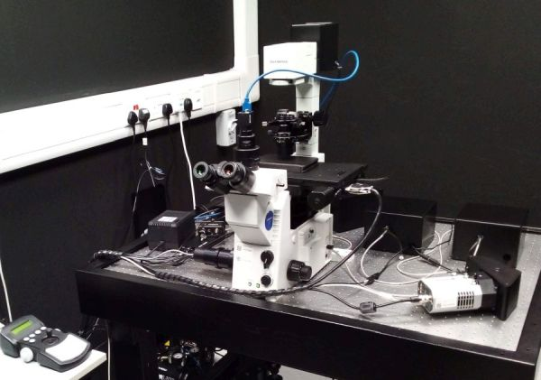

A custom built inverted
microscope for confocal Raman and Brillouin microspectroscopy. The
microscope is equipped with a colour camera for sample localisation
using transmitted light. Spectra of Raman and/or Brillouin scattering
are then collected from the laser focal volume in a confocal
configuration. Spectral mapping of the sample can be achieved using the
motorised stage which moves different points of the sample to the laser
focus.

Available
techniques:
- Raman microspectroscopy
- Brillouin microspectroscopy
Objectives:
- UPlanSApo 4x/0.16 dry, FWD 13 mm
- UPlanFLN 20x/0.5 dry, FWD 2.1 mm, CG 0.17 mm
- UPlanSApo 60x/1.35 oil, FWD 0.12 mm, CG 0.17 mm
[FWD = free working distance, CG = cover glass]
Lasers:
- 561 nm, for the default 100 mW laser power, the power at sample is
16 mW (20x and 60x objectives) or 33 mW (4x objective)
Detectors and
cameras:
- Custom Raman spectrograph (510 - 3734 cm-1) with Andor
iDus camera (DU401A-bvf)
- Custom VIPA based Brillouin spectrograph with PCO.edge sCMOS camera
(30 GHz free spectral range)
- FLIR Chameleon (CM3-U3-50S5M-CS) monochrome CMOS camera for
transmitted light imaging, 2448 x 2048 pixels, 3.45 μm/pixel.
Software:
Other features:
| Usage fees [SGD/hour] |
Academia |
Industry |
| 45 |
90 |
| Location |
ABIF, SCELSE, B2 (SBS-B2n-27P.5) |
| Safety Notice |
Requires N3 laser license
(N2/04107/0169) |
| Contact |
abif@e.ntu.edu.sg;
nobic.facilities@e.ntu.edu.sg |
BACK TO TOP